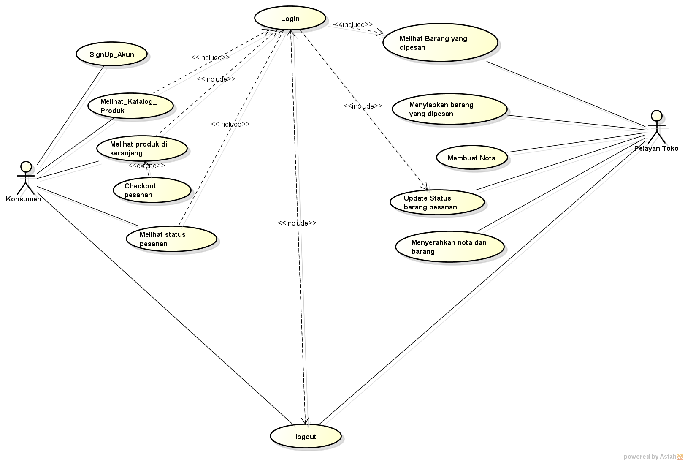

NIM : 1811500030
Nama : Sandy Gautama
Kelompok : TI6A
Hasil saya menydaur hari ini :
- Use Case merupakan interaksi aktor (digambarkan dengan wujud stickman) satu atau lebih dengan sistem
- Fungsi pada sistem berupa login, order, upload, dll
- Aktor adalah pengguna sistem.
- Aktor aktif (pengguna/berinterkasi dengan sistem) di bagian kiri sedangkan aktor pasif (aktor yang memerlukan inputan) dikanan
- Include adalah disertakan (panah ke usecase yang diperlukan) & Extend adalah pengembangan (panah ke usecase induk)
Hasil Latihan Saya
